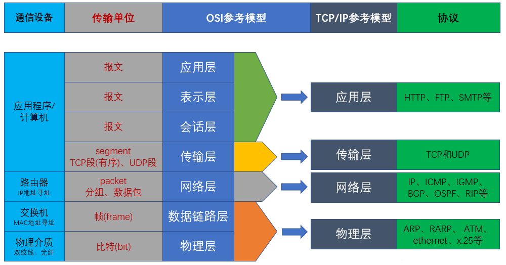
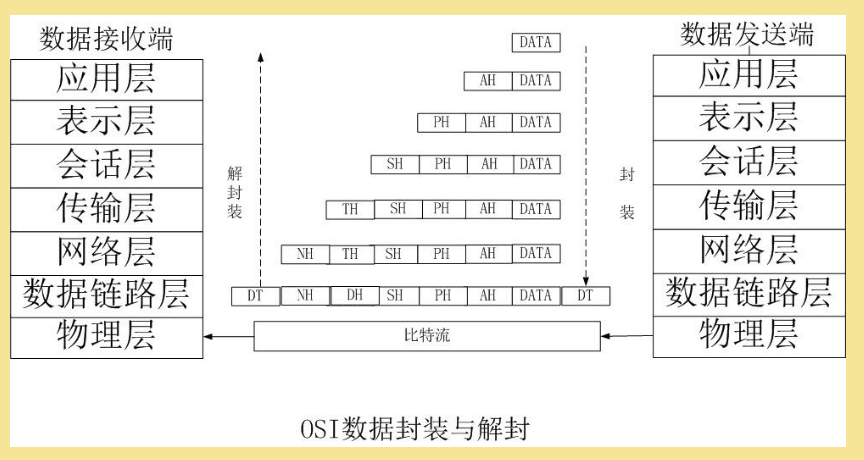

本文介绍了 OSI 参考模型中，各层代表的设备、数据单元、服务对象以及 OSI 模型和 TCP/IP 模型的比较。从物理层到应用层，介绍了不同层次的功能和服务对象，以及数据单元在各层之间的传输和封装过程。
计算机网络各层代表设备
- 物理层：网卡、网线、光纤、atm 线缆等
- 数据链路层：二层交换机
- 网络层：路由器、三层交换机、防火墙
- 传输层：代表协议，如 TCP & UDP
- 应用层：各种协议，如 HTTP & SMTP & FTP
OSI 模型中各层单位
在计算机网络中，有许多不同的概念用于描述数据在不同层次的传输和封装。以下是这些概念的简要介绍：
数据单元 |
所在层次 |
描述 |
|---|---|---|
| message | 应用层 | 在应用层发送和接收的数据单元，它可以是任意大小的数据块 |
| segment | 传输层 | 在传输层（如 TCP）中使用的数据单元，segment 包含了源端口号和目的端口号，并提供可靠的、有序的数据传输 |
| datagram | 网络层 | 在网络层（如 IP）中使用的数据单元，datagram 包含了源 IP 和目的 IP，并提供不可靠的、无序的数据传输 |
| packet | 网络层通用 | 在网络层中使用的通用术语，用于表示在网络中传输的数据单元，可以指代 segment 或 datagram |
| frame | 数据链路层 | 在数据链路层中使用的数据单元，frame 包含了物理地址（如 MAC 地址）和错误检测码，用于在物理网络中传输数据 |
| bit | 物理层 | 是计算机网络中最小的数据单位，用于表示二进制的 0 或 1 |
OSI 模型中各层的服务对象
不同层之间是在为谁提供服务呢？
应用层为应用程序提供服务，传输层为应用层提供端到端的数据传输服务，网络层为传输层提供网络间的数据传输服务，数据链路层为网络层提供主机到主机的数据传输服务。
- 应用层为应用程序提供服务。
- 传输层主要为进程提供端到端的通信服务。
- 传输层使用端口号来标识不同的进程，将应用层的数据划分为较小的数据单元（segment），并通过网络传输到目的地。
- 传输层可以提供可靠的数据传输，保证数据的完整性和顺序性。
- 此外，传输层还负责多个进程间的数据分发和复用，可以同时为多个进程提供服务。
- 网络层主要为主机提供服务。
- 网络层负责将传输层的数据单元（segment）打包成网络层的数据单元（datagram），并通过网络进行传输。
- 网络层使用 IP 地址来标识主机和网络，通过路由选择算法将数据传输到目的地，实现主机间的通信。
- 数据链路层主要为同一链路上的主机或设备提供服务。
- 数据链路层负责将网络层的数据单元（datagram）打包成数据链路层的数据单元（frame），并通过物理链路进行传输。
- 数据链路层使用 MAC 地址来标识主机或设备，通过帧的发送和接收来实现同一链路上的通信。
总结成表格如下：
所在层级 |
功能 | 服务的对象 |
|---|---|---|
| 应用层 | 为应用程序提供服务 | 应用程序 |
| 传输层 | 为进程提供端到端的通信服务，划分数据单元，保证数据传输可靠性和顺序性，数据分发和复用 | 进程 |
| 网络层 | 为主机提供服务，将传输层的数据单元打包成网络层的数据单元，通过网络进行传输，寻址和路由选择，实现主机间通信 | 主机 |
| 数据链路层 | 为同一链路上的主机或设备提供服务，将网络层的数据单元打包成数据链路层的数据单元，通过物理链路进行传输，帧的封装和解封装，帧的传输和错误检测，介质访问控制 | 同一链路上的主机或设备 |
| 物理层 | 通过物理链路进行数据传输，数据的编码和解码，数据的传输和接收 | 物理链路上的设备和传输介质等 |
OSI vs. TCP/IP 模型

OSI 模型数据封装与解封装过程
